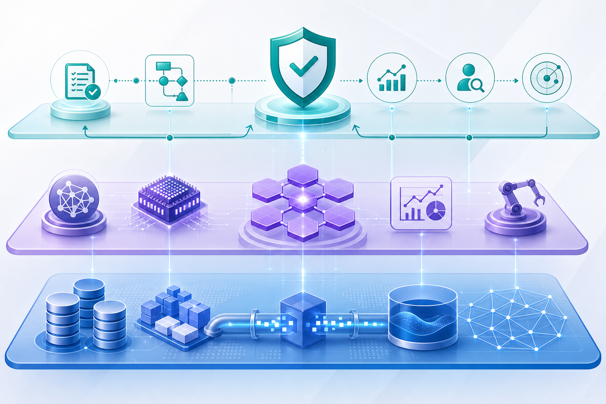

핵심 메시지: Google + Wiz의 결합은 보안 도구 추가가 아니라, 개발자 중심의 shift-left 보안과 AI 기반 인프라 분석을 멀티클라우드 운영 모델 안으로 끌어들이는 변화로 해석해야 합니다.
오늘의 원문 신호
Google Cloud Blog - Identity & Security · 2026-05-14
Cloud CISO Perspectives: How Google + Wiz changes multicloud strategy for CISOs
By centering developers and shifting security left, Wiz has seen a significant increase in security resolution. Here’s why this strategy matters for CISOs.
원문 보기저장 파일: 20260514_[IdentitySecurity]Cloud CISO Perspectives How Google + Wiz changes multicloud strategy for CISOs.md
핵심 트렌드 분석
Trend 1
보안의 주 사용자가 CISO에서 개발자까지 확장
Wiz 사례는 보안팀이 사후 통제자가 아니라 개발 흐름 속의 가드레일 제공자가 되어야 해결률이 올라간다는 점을 보여줍니다.
Trend 2
멀티클라우드와 멀티-AI의 동시 확산
AI 에이전트와 자동 치유 인프라가 늘어날수록 코드, 권한, 런타임, 데이터 흐름을 한 번에 보는 보안 분석 역량이 중요해집니다.
Trend 3
보안 데이터가 경영진 의사결정 언어로 전환
이사회와 경영진은 취약점 수보다 비즈니스 리스크, 복구 속도, 책임 소재, 규제 대응 상태를 요구합니다.

기술 변화의 의미
클라우드 보안은 CSPM, CNAPP, IAM, 코드 분석, 런타임 탐지의 경계를 넘어섭니다. 특히 AI 에이전트가 인프라를 생성·수정·치유하는 환경에서는 사람 계정뿐 아니라 워크로드·에이전트 정체성까지 통합 관리해야 합니다.
GeminiIAM
기업 적용 관점
1
가시성 통합
클라우드 계정, 코드 저장소, IAM, 데이터 접근 로그를 연결해 위험 경로를 하나의 그래프로 봅니다.
2
개발 워크플로 내재화
보안 티켓을 별도 프로세스로 밀어내지 말고 PR, CI/CD, IaC 검증 지점에 정책을 배치합니다.
3
AI 기반 우선순위화
모든 취약점을 동일하게 다루지 말고, 외부 노출·권한·데이터 민감도를 조합해 조치 순서를 정합니다.
한국 기업 관점 시사점
한국 대기업과 금융·제조·공공 조직은 멀티클라우드 도입이 이미 진행됐지만, 보안 운영은 여전히 계정·프로젝트·벤더별로 분절된 경우가 많습니다. Google + Wiz 메시지는 클라우드 보안 플랫폼을 “탐지 도구”가 아니라 개발 생산성, 감사 대응, AI 도입 속도를 함께 좌우하는 운영체계로 봐야 한다는 점을 시사합니다.
실행 전략
| 기간 | 우선 과제 | 성과 지표 |
|---|
| 0~30일 | 클라우드 자산, IAM 고위험 권한, 인터넷 노출 워크로드 인벤토리 정리 | 핵심 계정 커버리지, 위험 자산 식별률 |
| 30~90일 | IaC/CI 파이프라인에 정책 검증을 삽입하고 개발자 조치 흐름을 표준화 | 평균 조치 시간, 재발 취약점 감소율 |
| 90일 이후 | AI 기반 위험 우선순위화와 경영진 리스크 대시보드 구축 | 이사회 보고 가능 지표, 중요 리스크 SLA 준수율 |
리스크/거버넌스 고려사항
벤더 결합 리스크
플랫폼 통합의 편의성과 특정 생태계 종속을 함께 평가해야 합니다.
AI 판단의 설명가능성
AI가 위험 우선순위를 제안하더라도 근거, 데이터 출처, 예외 승인 이력이 남아야 합니다.
개발자 경험
보안 정책이 빌드 속도와 배포 경험을 과도하게 저해하면 우회 경로가 생깁니다.
부록: 이미지 생성 프롬프트
# GCP Daily Blog Image Prompts - 20260515
## Image Prompt 1
- 목적: Hero 영역에서 멀티클라우드 보안 전략과 CISO 관점을 시각화
- 삽입 위치: Hero 바로 아래
- image2 prompt: Executive blog hero image for Korean enterprise leaders: Google Cloud security strategy, multicloud CISO command center, abstract cloud shield, AI agents, data flows, professional editorial illustration, no company logos, no brand marks, no tiny text, premium blue white emerald palette, 16:9 composition
- 권장 비율: 16:9 landscape
- alt 텍스트: 멀티클라우드 보안 전략과 AI 기반 CISO 대시보드를 표현한 추상 이미지
## Image Prompt 2
- 목적: Enterprise AI·Data·Cloud 운영 모델 분석 섹션 시각화
- 삽입 위치: 핵심 트렌드 분석 이후
- image2 prompt: Strategic infographic style image: enterprise AI data cloud operating model, three layers labeled conceptually by visual icons not readable text: data foundation, AI platform, governance control plane; Korean executive blog aesthetic, clean geometric diagram, no logos, no tiny text, blue violet teal, 16:9
- 권장 비율: 16:9 landscape
- alt 텍스트: 데이터 기반, AI 플랫폼, 거버넌스 제어 계층으로 구성된 기업 클라우드 운영 모델
## Image Prompt 3
- 목적: 리스크와 거버넌스 고려사항 섹션 보강
- 삽입 위치: 리스크/거버넌스 고려사항 섹션 앞
- image2 prompt: Risk and governance visual for Google Cloud daily strategy blog: AI agents, identity security, multicloud risk radar, CISO dashboard, controlled innovation, professional editorial illustration, no logos, no readable small text, blue green dark navy, 16:9
- 권장 비율: 16:9 landscape
- alt 텍스트: AI 에이전트와 멀티클라우드 리스크 레이더를 보여주는 보안 거버넌스 이미지